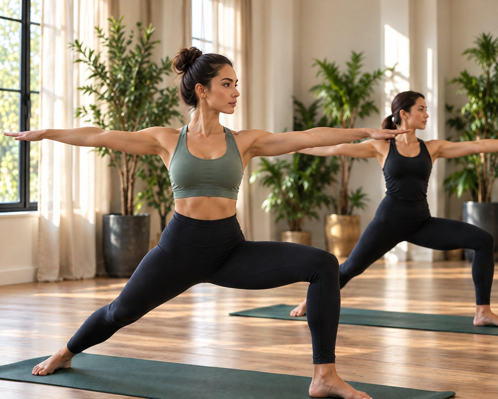
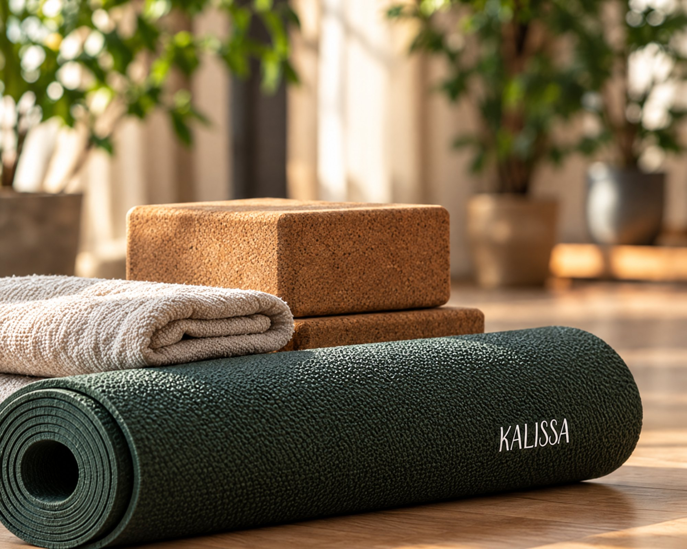
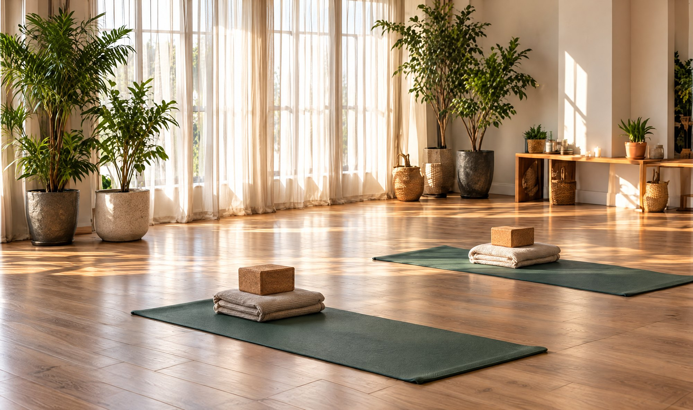

Yoga deneyimim yok, katılabilir miyim?
Evet. İlk derste temel duruşları ve nefesle geçişleri tanırsın; akış deneyimine göre sadeleştirilir.
VINYASA YOGA
Nefes ve hareketi bir araya getiren
Vinyasa Yoga ile tanış. Kendine zaman
ayır, kendi ritminde ilerle.

Nefesle uyumlu, akıcı bir yoga
deneyimi.
Deneyimine uygun yönlendirme
ve destek.
Hedeflerine ve ihtiyaçlarına uygun
bir pratik.
Vinyasa Yoga, nefesle uyumlu hareket geçişlerine
odaklanır. Bireysel veya iki kişilik ders seçenekleriyle
deneyimine uygun bir başlangıcı birlikte planlayalım.
Özetle Vinyasa Yoga; duruşları nefesle uyumlu, akıcı geçişlerle birbirine bağlayan bir yoga stili. Kalissa Fit’te dersleri bireysel ya da iki kişilik olarak planlıyoruz. Aşağıdaki başlıklarda dersin akışını, kimlere uygun olduğunu ve ders seçeneklerini bulabilirsin.
Vinyasa, Sanskritçede kabaca “özel bir biçimde yerleştirmek” anlamına gelir. Bu stilde duruşları tek tek beklemek yerine, nefesle uyumlu geçişlerle birbirine bağlarsın. Örneğin her nefes alışta bir hareket, her nefes verişte bir sonraki hareket gelir. Bu yüzden pek çok kişi Vinyasa Yoga’yı “akış yogası” olarak da tanır. Kısacası amaç, hareketle nefesi aynı ritimde buluşturmak.
Sonraki konuBir ders nasıl geçer?Ders, nefesine odaklandığın kısa bir hazırlıkla başlar. Sonra bedenini ısıtan akışlara geçersin; güneşe selam serileri bu bölümün temelini oluşturur. Bu bölümden sonra ayakta duruşlar, denge çalışmaları ve esneme hareketleri gelir. Eğitmenin de bu sırada her duruşta hizalanmanı takip eder; bu nedenle gerektiğinde blok gibi yardımcı ekipmanlar önerir. Ders, bedeninin ve zihninin dinlendiği bir gevşeme bölümüyle sona erer.
Sonraki konuKimler için uygun?Vinyasa Yoga’ya başlamak için esnek olman ya da deneyim sahibi olman gerekmez. Çünkü eğitmen akışı senin seviyene göre sadeleştirir ve zor duruşların daha kolay çeşitlerini gösterir. Hareketli bir yoga pratiği arayanlar, gün içinde nefesine odaklanarak mola vermek isteyenler ve esnekliğini geliştirmek isteyenler bu stili sıklıkla tercih eder. Bununla birlikte bir sağlık durumun ya da hamileliğin varsa, derse başlamadan önce paylaşman önemli.
Sonraki konuBireysel mi, çift mi?Kalissa Fit’te Vinyasa Yoga derslerini bireysel ya da iki kişilik olarak planlıyoruz. Bireysel derslerde eğitmenin tüm dikkatini sana verir; böylece akışı hedeflerine ve bedenine göre kurar. Öte yandan iki kişilik derslerde bir arkadaşınla, eşinle ya da aile üyenle aynı pratiği paylaşırsın. Üstelik birlikte gelmek, düzenli devam etmeyi çoğu zaman kolaylaştırır. Hangi biçimin sana uyduğunu ilk görüşmede birlikte değerlendiriyoruz.
Sonraki konuDiğer derslerle dengeYoga, yoğun antrenman günlerinin arasında nefes alacağın bir alan açar. Programında boks ya da EMS antrenmanı gibi tempolu dersler varsa, Vinyasa akışları nefes ve esneklik tarafını tamamlar. Buna ek olarak duruşa odaklı bir çalışma istersen Reformer Pilates ile de birleştirebilirsin. Sonuç olarak hareketli ve sakin derslerin bir arada olduğu bir hafta, bedenine de zihnine de iyi gelir.
Sonraki konuKalamış’ta yogaYoga derslerimiz için Kalissa Fit’in Kalamış’taki stüdyosunda buluşuyoruz. Binanın zemin katında yer alan Kalissa Beauty & Wellness de yoga pratiğini bakım ve beslenme desteğiyle tamamlamak isteyenler için hemen yanı başında. Bireysel ya da iki kişilik Vinyasa Yoga dersin için uygun günü ve saati birlikte belirleyelim. Kadıköy ya da çevresinden geleceksen bize yaz; ilk dersinin gününü birlikte seçelim.
Başlamaya hazırsanDeneme dersini planla
Günün içinde durmak, nefesine ve hareketine
odaklanmak için bir zaman.

Evet. İlk derste temel duruşları ve nefesle geçişleri tanırsın; akış deneyimine göre sadeleştirilir.
Evet. Vinyasa Yoga’yı bireysel olarak ya da iki kişi birlikte alabilirsin; uygun günü ve saati birlikte planlarız.
Rahat hareket edebileceğin bir kıyafet ve su yeterli. Mat ve yardımcı ekipman konusunda randevu sırasında bilgi veririz.
WhatsApp’tan yaz, birlikte yanıtlayalım.
Sorularını paylaş, ilk dersini planlayalım.